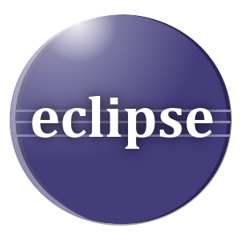
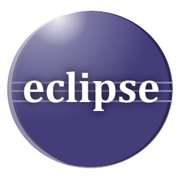

Cu Open Source îți iei
destinul în propriile mâini
1993
Created by IBM in 1991 as a demonstration of QBASIC's explosive banana capabilities. This game came with every installation of MS-DOS 5.
2000

2014
Ecosistem Open Source

 
 
bine bine, dar cu "mulțumesc"
nu pot cumpara paine la magazin
- Dual-licensing
- Selling professional services
- Selling of branded merchandise
- Voluntary donations
- Pre-order/crowdfunding/reverse-bounty model
- Advertising-supported software
- Selling of optional proprietary extensions
- Re-licensing under a proprietary license
http://en.wikipedia.org/wiki/Business_models_for_open-source_software
Stay in contact
@jcsrb

jakob@cosoroaba.ro
Surse imagini
- Big Idea - Public Domain
- Time machines - Booster Designs
- Leading Edge Model D - Public Domain
- Shocked designed by Jakob Vogel from the Noun Project
- Eye Patch designed by Javier Sánchez from the Noun Project
- Neil Hainsworth - Peelicons vol 1